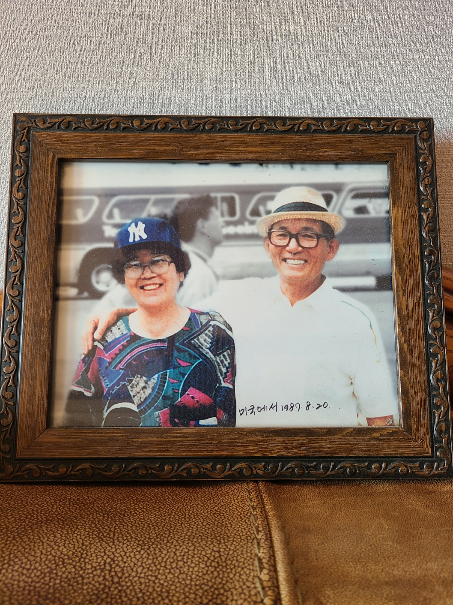
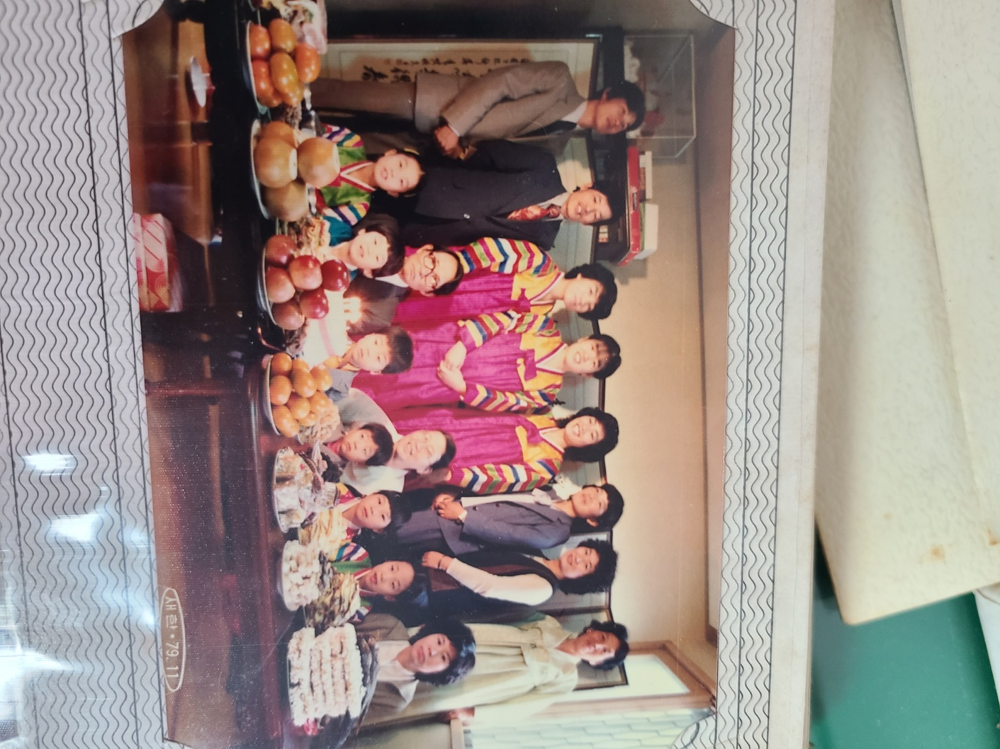
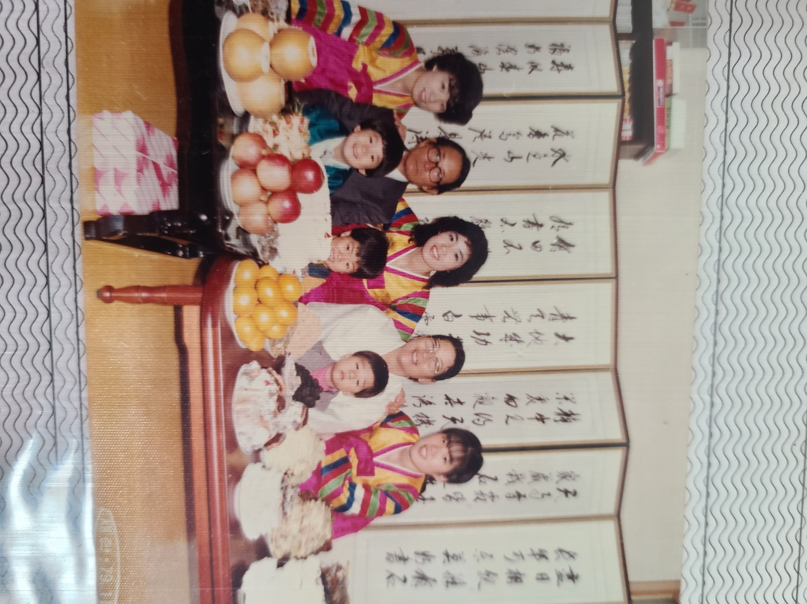

자식이 어릴 때는 부모가 학대해도 자식 자신이 나쁜 거라고 믿을 정도로 따르는
존재이지만, 이후 청소년으로 자라나면서 갑자기 자신이 하고 싶은 것을 마음껏
못하게 한다고 과거의 관습에 얽매여 자신의 앞을 가로막는 장애물 같은 존재로
보일 때가 있으며, 어느 정도 성장하고 나서 자신의 부모가 어떤 존재인가를 인지함에
따라 아예 안 따르게 되는 일도 많다. 그러지 않아도 언젠가는 그 그림자에서 벗어나
자립해야 할 날이 올 수도 있으니, 스스로 자립심을 키우기 위해 부모에게 의존하는
태도를 버려야 할 것이다. 그렇지 않으면 부모의 간섭을 평생토록 지겹게 받게 될것이며,
부모가 곁을 떠난 후엔 의존할 곳이 없어 생계를 유지하기도 어려워진다.
20세기에는 사람은 부모가 되는 것이 사실상 의무로 여겨졌을 정도로 누구든지 결혼하고 아이를
낳았지만, 최근 양극화가 심화되면서 가정을 꾸리고 자식을 낳아 오손도손 살기에는 세상이
너무 험난하다고 생각하는 사람들이 늘어나고 개인주의의 대세화로 가정을 이루기 보다는
혼자가 마음이 편하니 독신을 고수하겠다는 사람들도 늘어나서 해마다 새로이 탄생하는 가정의
수가 줄어들어 저출산의 영향으로 과거에 비해 어린이가 희귀해진 것처럼 누군가의 부모라는
존재도 점점 희귀해질 것으로 보인다. 애당초 어린이가 희귀해지는 이유가 새로운 가정의 탄생
즉 새로운 부부의 탄생이 점점 줄어들고 있기 때문이니 당연지사다.
반출생주의 관점에 따르면, 생물학적 부모가 되는 일은 그로 인해 태어날 아이가 고통•죽음
등에 노출되도록 강제하는 해악적 행동이며, 따라서 비출산이나 입양이 권장된다.
사람들은 부모가 되는 것이 부모 자신의 행복을 증진시킨다고 생각하는 경우가 많지만,
실제로는 평균적으로 부모의 행복을 저해한다는 연구 결과가 있다. 이를 부모됨의
역설(parenthood paradox)이라고도 한다.


